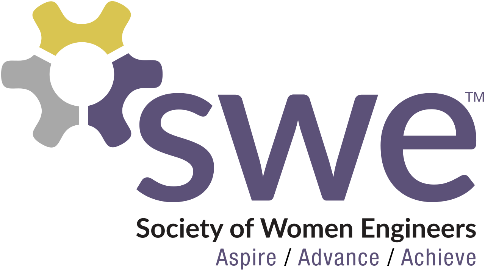

SWE++ Chair &
Public Relations Chair
09/2024 – 05/2026
San José State University'sSociety of Women Engineers Chapter
Initially, I joined the Society of Women Engineers to connect with other women in STEM. I served as Public Relations Chair and then as SWE++ Chair, where I led outreach and communications for the chapter. I also mentored middle school girls as they learned to code in Python.